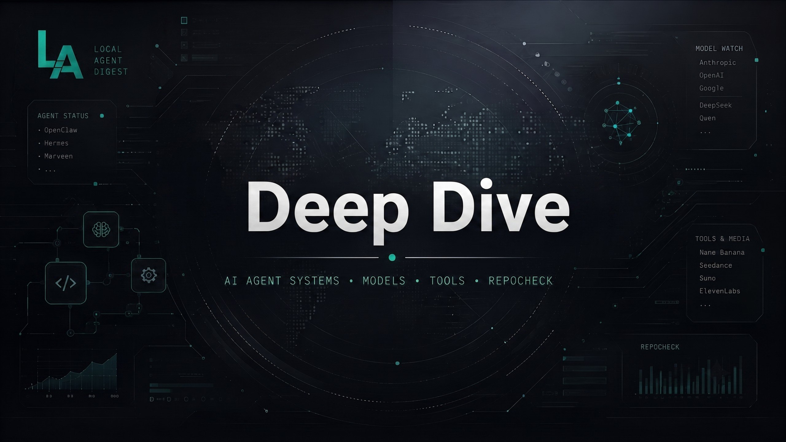

EDITION: 2026.07.17
LEGFRISSEBB JELENTÉSEK // FEED_FLOW

// DATE: 2026-07-16
Megjelent az OpenAI GPT-5.6 és megújult a Suno dalszöveg-szerkesztője
Friss fejlesztések a nagy nyelvi modellek és az AI-audio piacán az önhosztolt ágensek üzemeltetői számára.
HOSSZÚ CIKK

// DATE: 2026-07-15
Közeleg a határidő: Július 24-én lekapcsolják a régi DeepSeek API-kat, de a V4 mindent megváltoztat az önhosztolt agenteknél
A DeepSeek-V4 nem csak egy modellfrissítés -- kötelező migráció és egy sokkal robusztusabb ökoszisztéma az önhosztolt agenteknek.
// DATE: 2026-07-15
DeepSeek-V4 migráció és Claude 5 újdonságok
A legfontosabb hírek és trendek önhosztolt AI-ágens üzemeltetőknek.